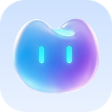

灵猫 2.0 Web Clip
最新版 2.0.21 · 与截图中的新版首页一致
使用 iPhone 自带的 Safari 打开本页，点击上方蓝色按钮。
最新版打开后，点击 Safari 底部的“分享”按钮。
选择“添加到主屏幕”，再点击右上角“添加”。
这是无需开发者账号的 Web Clip，不会覆盖你已安装的 IPA 软件。

最新版 2.0.21 · 与截图中的新版首页一致
这是无需开发者账号的 Web Clip，不会覆盖你已安装的 IPA 软件。